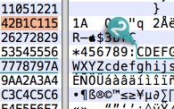
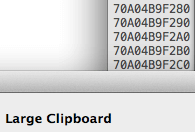
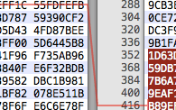

Hex Fiend
A fast and clever open source hex editor
for Mac OS X.
A fast and clever open source hex editor
for Mac OS X.
- Insert, delete, rearrange. Hex Fiend does not limit you to in-place changes like some hex editors.
- Work with huge files. Hex Fiend can handle as big a file as you’re able to create. It’s been tested on files as large as 118 GB.
- Small footprint. Hex Fiend does not keep your files in memory. You won’t dread launching or working with Hex Fiend even on low-RAM machines.
- Fast. Open a huge file, scroll around, copy and paste, all instantly. Find what you’re looking for with fast searching.
- Binary diff. Hex Fiend can show the differences between files, taking into account insertions or deletions.
- Smart saving. Hex Fiend knows not to waste time overwriting the parts of your files that haven’t changed, and never needs temporary disk space.
- Data inspector. Interpret data as integer or floating point, signed or unsigned, big or little endian...
- Embeddable! It’s really easy to incorporate Hex Fiend’s hex or data views into your app. Its permissive BSD-style license won’t burden you.

{{ page.download_size }}
SHA1: {{ page.download_sha1 }}
|  |  |
|  |  |
|
{{ page.github }} |
|
{{ page.source_filename }} |
|
Two-clause BSD License |
- Hex Fiend is available as a framework for embedding into your apps.
- Download the source above to get the framework and sample code.
- See the API Reference to get started.
- Development is now hosted on GitHub
Requirements
- macOS 10.8 or later.
- Intel Macs only.
- Support for Tiger and PowerPC is available with version 2.0 (below).
- Release notes for all versions
- Version 2.5, released 2017-02-04
- Version 2.4, released 2016-11-17
- Version 2.3, released 2014-07-31
- Version 2.1.2, released 2012-02-04
- Version 2.1.1, released 2011-12-21
- Version 2.1.0, released 2011-12-12
- Version 2.0, released 2009-07-30, available here
- Hex Fiend 1.x is still available here.
- Development is now hosted on GitHub